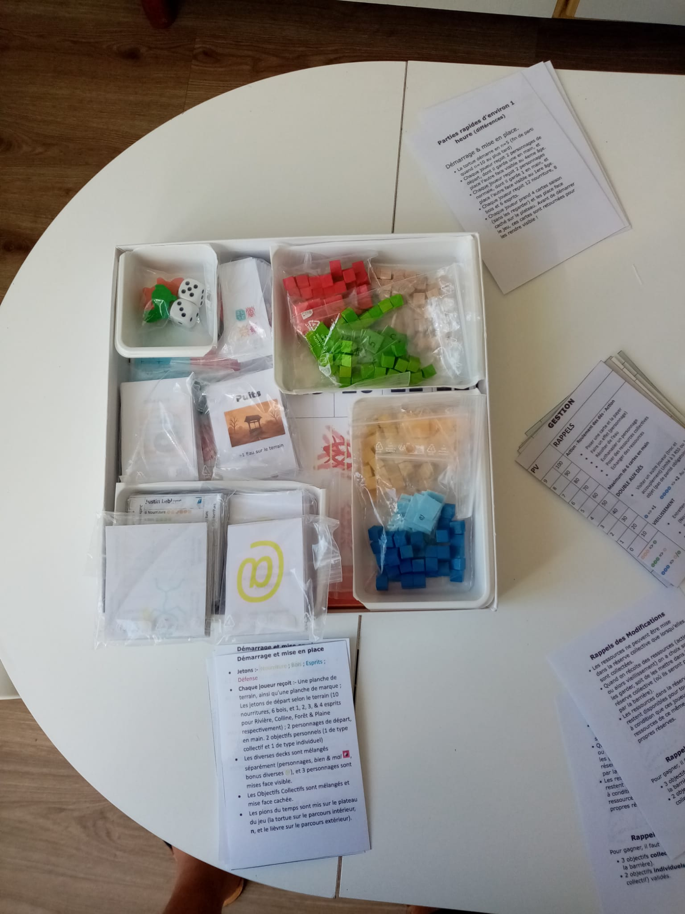
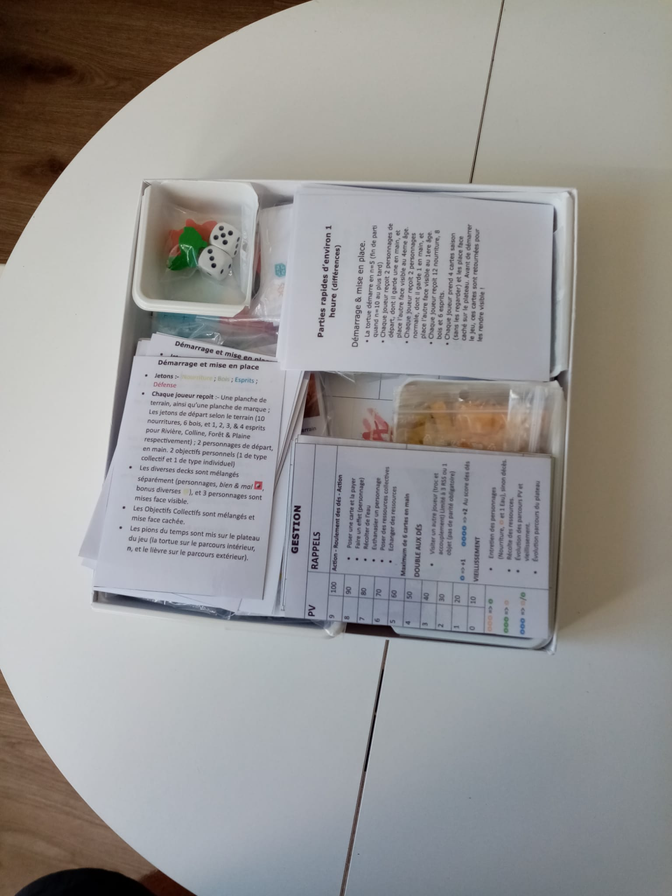
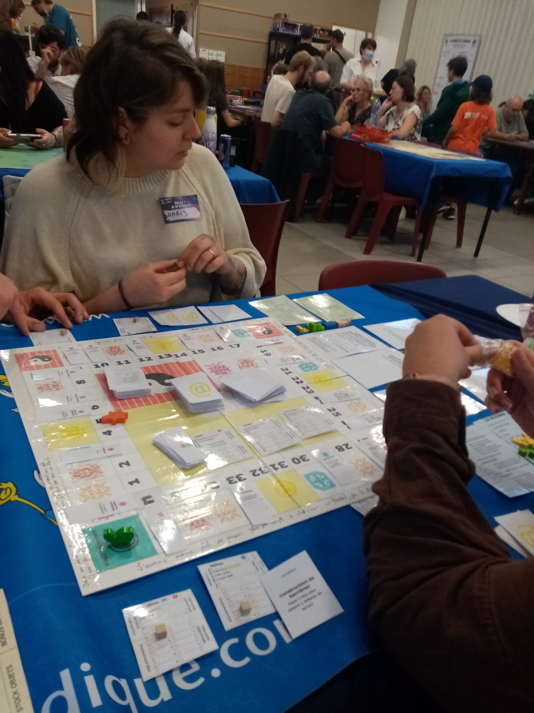
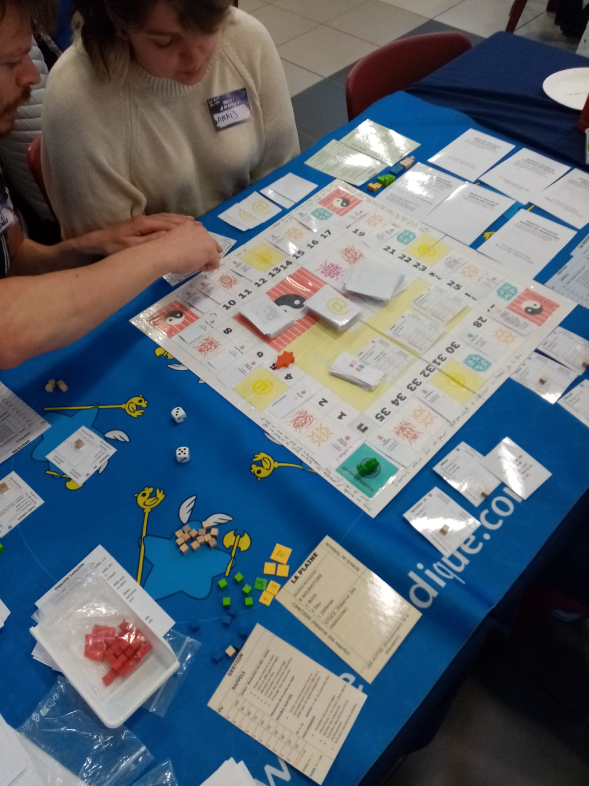
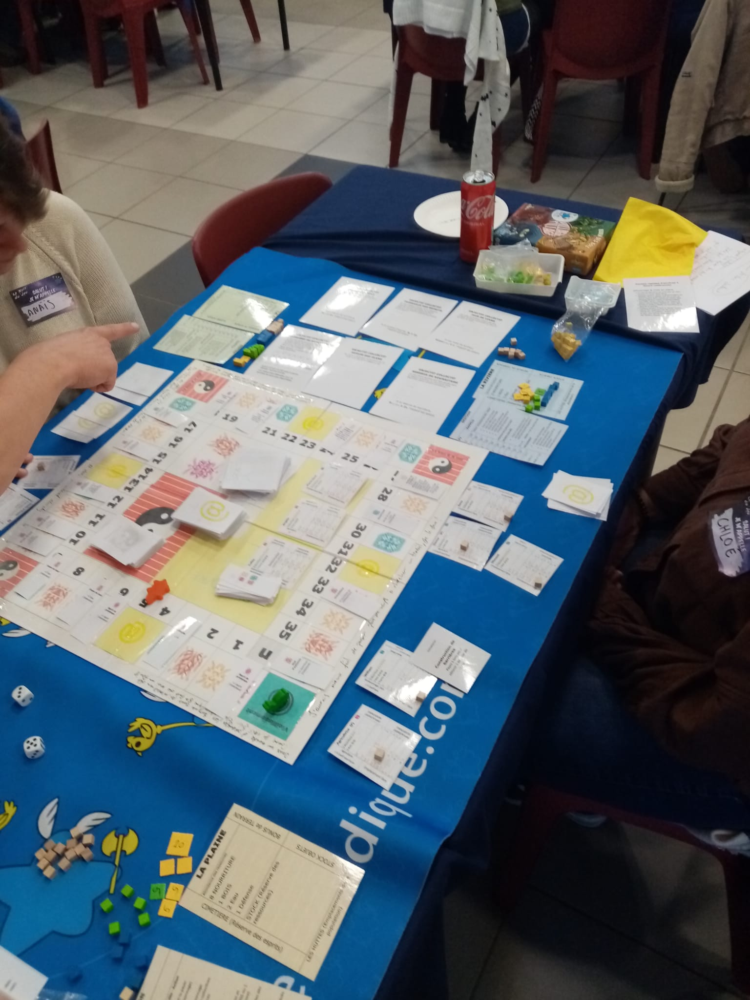

"SURVIVRE-Clans" est un jeu de stratégie et de survie, à la fois cooperatif et compétitif, où les joueurs incarnent des clans luttant pour leur survie dans un monde post-apocalyptique. Chaque clan a ses propres compétences et ressources, et les joueurs doivent gérer leurs ressources, construire des abris, et affronter des dangers pour survivre. Tout est évoluatif, aussi bien les personnages que le plateau de jeu. Un jeu pour 2 à 4 joueurs, à partir de 14 ans. Parties de 90 à 120 minutes.
Pour le moment le jeux est toujours en cours de developpement, donc pas de vidéo !
« to be written. » AURELIE
« To be written. » JIBOUILLE
« To be written » X